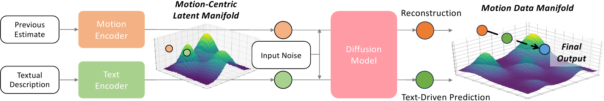
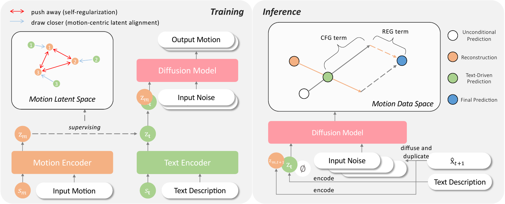
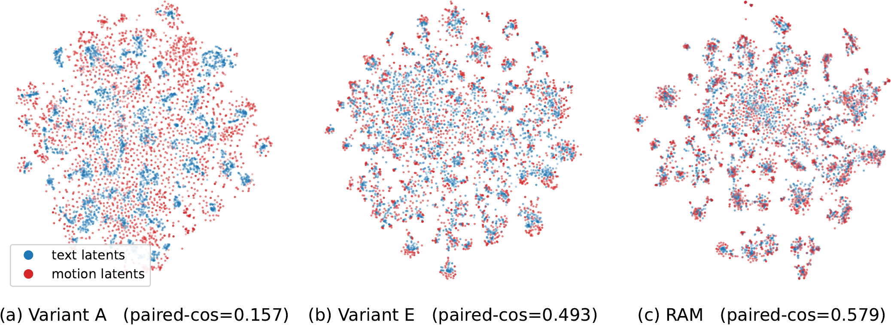
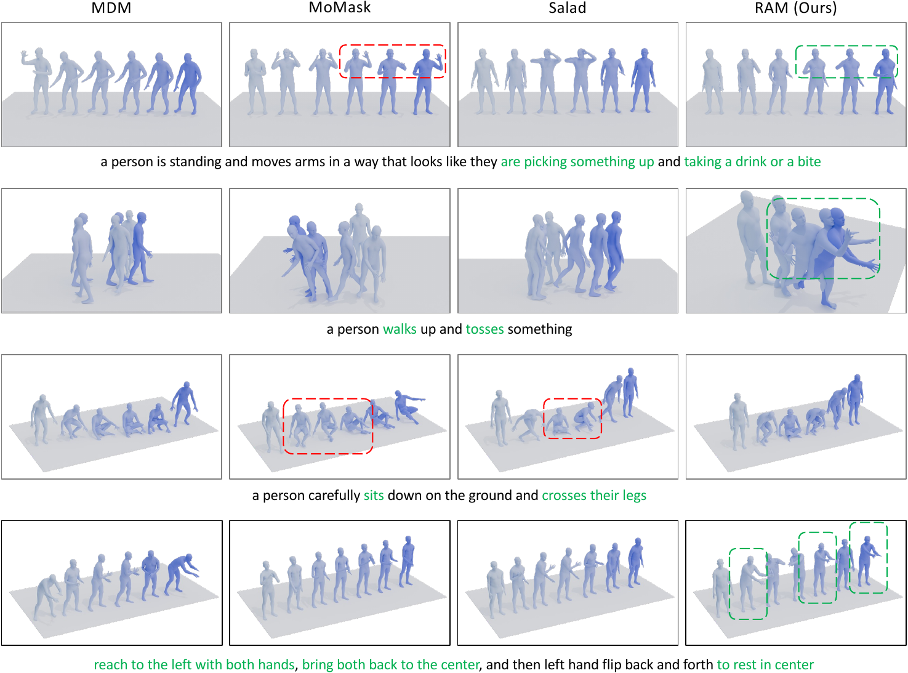
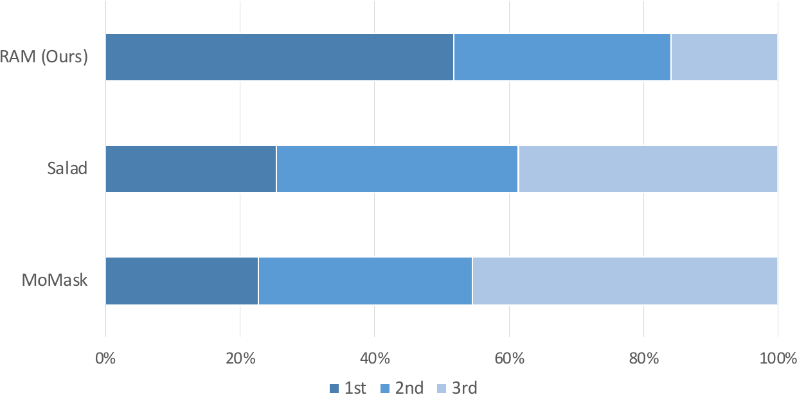

Reconstruct motion
A motion encoder summarizes an input sequence into a latent representation that preserves the dynamics needed by the diffusion decoder.
ECCV 2026 · Project Page
1 South China University of Technology · 2 Joy Future Academy
A motion-centric latent space and reconstructive error guidance for realistic, semantically aligned human motion generation.

Text-to-motion diffusion models must bridge an abstract language representation with continuous, high-dimensional motion, while errors introduced early in denoising can propagate through the rest of the sampling process. RAM addresses both issues. It learns a motion-centric latent space through a reconstruction branch, uses self-regularization and motion-centric latent alignment to map text into that space, and introduces Reconstructive Error Guidance (REG) to expose and amplify improvements during inference.
The supplementary video walks through the motivation, method, comparisons, and results.
RAM uses motion reconstruction during training and reconstructive guidance during inference.

A motion encoder summarizes an input sequence into a latent representation that preserves the dynamics needed by the diffusion decoder.
Self-regularization makes the motion manifold discriminative, while motion-centric latent alignment maps text conditions onto that manifold.
REG reconstructs the previous estimate, then amplifies the residual between that reconstruction and the current text-driven prediction.
RAM keeps the motion space as the anchor and pulls text latents toward it. On paired HumanML3D test examples, the resulting representation forms tighter interleaving between text and motion latents than the two-stream baseline and a contrastive variant.

Early denoising steps recover motion from nearly pure noise and are especially prone to error. At each step, REG encodes the previous estimate, reconstructs it, and compares that reconstruction with the current text-conditioned prediction. Amplifying this residual highlights the improvement made by the current step.
= text-driven prediction + w₁ · REG residual + w₂ · CFG residual
Results reported on the standard HumanML3D and KIT-ML test sets.
| Method | HumanML3D | KIT-ML | ||
|---|---|---|---|---|
| FID ↓ | R@1 ↑ | FID ↓ | R@1 ↑ | |
| MDM | 0.489 | 0.418 | 0.547 | 0.404 |
| MotionLCM v2 | 0.056 | 0.553 | — | — |
| Salad | 0.076 | 0.581 | 0.296 | 0.477 |
| RAM (ours) | 0.032 | 0.561 | 0.172 | 0.464 |
On HumanML3D, RAM reaches an FID of 0.032 and an R-Precision@1 of 0.561 with 20 inference steps. On KIT-ML, it remains competitive on both motion realism and semantic alignment.
RAM better preserves the action sequence and fine-grained motion cues in challenging prompts.

Guidance can be applied selectively to trade a small amount of time for a large FID improvement.
Removing motion-centric latent alignment raises FID from 0.032 to 0.424. Removing self-regularization raises it to 0.064, while removing REG raises it to 0.132. The three components contribute complementary gains.
Participants ranked samples by considering motion quality and semantic alignment together.

The study compares RAM with MoMask and Salad on HumanML3D prompts. Participants jointly considered whether the motion looked natural and whether it matched the text.
Read the supplementary material ↗Slides covering the motivation, method, latent space, and ablations.
The reconstruction branch supplies the motion-centric anchor used to supervise text-to-motion generation.
REG uses the previous estimate as a negative reference and amplifies the improvement in the current prediction.
RAM currently represents the entire textual description with a single token. Finer-grained multi-token conditions could support more detailed control for long-horizon motion generation.
This work was supported by the National Natural Science Foundation of China under Grants 62476099 and 62076101, Guangdong Basic and Applied Basic Research Foundation under Grants 2024B1515020082 and 2023A1515010007, and the TCL Young Scholars Program.
@inproceedings{liu2026ram,
title = {Reconstruction-Anchored Diffusion Model for Text-to-Motion Generation},
author = {Liu, Yifei and Ding, Changxing and Guo, Ling and Jiang, Huaiguang and Cao, Qiong},
booktitle = {European Conference on Computer Vision (ECCV)},
year = {2026}
}